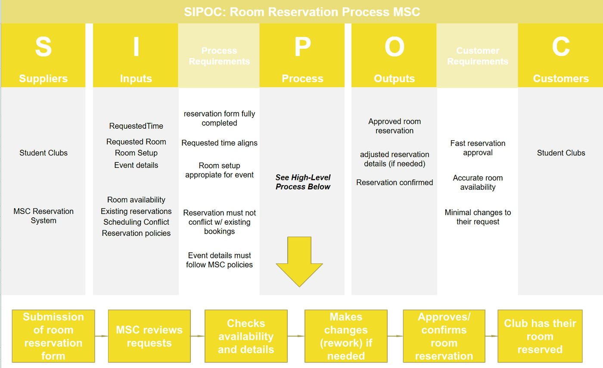

EngineeringManufacturing & quality engineering · USF course project
Lean Six Sigma DMAIC Process Improvement
More than half of the room reservations student clubs made needed staff to fix them by hand. Our team traced most of that rework to one failure mode and proposed a process to prevent it.
Measured vs proposed. The baseline and the root cause come from data we collected on real reservations. The future-state process and the control plan are our proposals; they haven't been put in place or measured.
01Overview
Student clubs at USF reserve rooms in the Marshall Student Center (MSC) through a reservation form. MSC staff review each request, check the room and the event details, and correct anything that doesn't fit before they confirm it.
Every one of those corrections is rework. It costs staff time, and it slows down the answer a club is waiting on.
02Objective
Reduce the errors that happen when students reserve rooms, so that staff spend less time fixing requests by hand.
- Find the primary causes
- Standardize the process
- Error-proof the reservation
- Minimize manual corrections
03My contribution
- Set the process baseline from reservation data, using histograms, box plots and run charts.
- Ran the Pareto analysis, 5 Whys and fishbone diagram that traced most of the rework to a single failure mode.
- Built the future-state value stream map and the control plan, with process measures, trigger points and reaction plans.
04Design process
We worked through DMAIC: define the process, measure how it performs, analyze why it fails, then improve it and plan how to keep it improved. The first three steps are measured; the last two are proposed. Scroll through it below.
-
01 · Define
Mapping the process
A club submits the form, staff review the request and check the room and details, and anything that doesn't fit gets fixed by hand before the reservation is confirmed. A SIPOC diagram set out who supplies what and what clubs need from the process.
-
02 · Measure
Measuring the rework
We followed real reservations through the process. More than half of them took the rework loop and needed staff to fix them by hand.
-
03 · Analyze
Finding the root cause
A Pareto chart of the causes showed that one failure mode was behind most of the rework. 5 Whys and a fishbone diagram traced it back to its root cause.
-
04 · Improve · Proposed
Designing it out
Our proposed future state adds error-proofing and a standard way to check each request, so the problem gets caught at the form instead of fixed by hand at the end. We mapped it in a future-state value stream map.
-
05 · Control · Proposed
Keeping it fixed
The proposed control plan tracks how many reservations need rework, sets trigger points that call for action and a reaction plan for each, and targets rework below 45%.

05Testing & validation
The baseline came from a sample of reservation transactions. Histograms and box plots showed how much rework there was, and run charts showed how it behaved over time. Counting the defects put the process at about 1.3 sigma, far from where a reliable process should be.
The Pareto chart separated the one failure mode that mattered from the many that didn't. 5 Whys and a fishbone diagram then pushed past the symptom to the cause, so the improvement would target the cause and not just the fix-ups.
Measured
The baseline: more than half of reservations needed rework. The root cause: one failure mode behind most of it.
Proposed
A future state with error-proofing and standard checks, and a control plan with measures, trigger points and reaction plans, targeting rework below 45%.
06Results
What we measured is the problem and its cause. The future state and the control plan are what we proposed to fix it, so their effect is a target, not a result yet.
07Key takeaways
- Measure before fixing. A baseline makes the problem concrete and gives any change something to be judged against.
- Most of the pain has one cause. The Pareto chart showed that one failure mode drove most of the rework, which kept the improvement focused.
- A fix has to be held. Without measures and trigger points, a process drifts back, so the control plan matters as much as the change.
- The tools carry over. DMAIC, Pareto analysis and control plans are the same tools used to cut defects in medical device manufacturing.